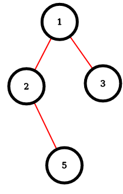
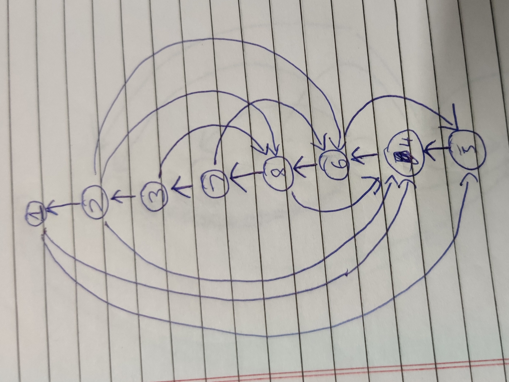

root vertexroot vertex.(min(dfsnum(u), dfsnum(v)))visited(min(dfsnum(u), dfsnum(v)))visitedWe are asked used a Non-DFS tree instead of DFS tree.
One direct observation is in a Non DFS tree there might be cross edges, where as in DFS tree only back edges exist.[graph is un-directional]
So what essentially happens assume there is cross edge,then it will form a cycle with LCA of the two vertices, which need not be one of u,v.
The problem is when X->(lca(u,v)) is not one of u,v.
In which case path to both u and v from X will contain only edges going towards the root,only edge (u,v) away from the root.
In which case, simple cycle does(need) not exist for all these nodes in the path so edge (u,v) has possibilty of not ending up in any ear.
We can see from this directed graph for jen algorithm below(which the directed graph with BFS tree rooted at 1), that there is simple cycle induced by non tree edge (3,5)
So Any spanning tree will not work , DFS trees works becuase there are no cross edges, cross edges as non tree edges need not induce a simple cycle , when directions are given according to our algorithm.
Back edges dont cause these problem
Graph:



edge(u,v) -> DFS number

| vertex | Preoder number |
|---|---|
| 1 | 1 |
| 2 | 6 |
| 3 | 8 |
| 4 | 5 |
| 5 | 2 |
| 6 | 3 |
| 7 | 4 |
| 8 | 7 |
| index | edge(u,v) | LCA | Preder Number |
|---|---|---|---|
| 1. | (1,4) | 1 | 1 |
| 2. | (4,2) | 1 | 1 |
| 3. | (6,2) | 1 | 1 |
| 4. | (4,6) | 5 | 2 |
| 5. | (4,8) | 1 | 1 |
| 6. | (3,8) | 2 | 6 |
| 7. | (6,8) | 1 | 1 |
| 8. | (7,8) | 1 | 1 |
| 9. | (7,3) | 1 | 1 |
| Sort Number | edge(u,v) | LCA | Preder Number |
|---|---|---|---|
| 1. | (1,4) | 1 | 1 |
| 2. | (4,2) | 1 | 1 |
| 3. | (6,2) | 1 | 1 |
| 4. | (6,8) | 1 | 1 |
| 5. | (7,8) | 1 | 1 |
| 6. | (7,3) | 1 | 1 |
| 7. | (4,8) | 1 | 1 |
| 8. | (4,6) | 5 | 2 |
| 9. | (3,8) | 2 | 6 |
| Index | edge(u,v) | lables of cycle in which present | label of edge |
|---|---|---|---|
| 1. | (1,2) | 2,3,4,5,6,7 | 2 |
| 2. | (1,5) | 1,2,3,4,5,6,7 | 1 |
| 3. | (5,4) | 1,2,7,8 | 1 |
| 4. | (5,6) | 3,4,5,6,8 | 3 |
| 5. | (6,7) | 5,6 | 5 |
| 6. | (2,8) | 4,5,7,9 | 4 |
| 7. | (2,3) | 6,9 | 6 |
Final Ear decomisition:
We can move intial non tree edge to Label 0(here the above in itself ear decompsed):

2 between(i,j).1 ans 2 between given vertices (i,j)(i,j)O(N^2)O(N^2.37)O(N^2)+O(N^2.37) = O(N^2.37)